Sometimes there comes a time where you'll find the need to replace the default images with your own custom graphics. This is possible without overwriting any of the default images. Custom graphics are able to make your own game episode unique and colorful.
The process is quite simple, but for those of you who don't know how, here is an in depth look at using custom graphics with the editor.
When using custom graphics, it's not necessary to replace any global data, you simply have to put your graphics in the per level or per episode folder of your game. All level files of an episode are placed together in this one folder.
Level Custom Folders - are folders which have the same name as the level file. For example, the folder name for the level "Dracula.lvlx" would be "Dracula".
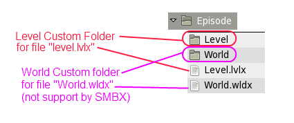
Putting custom graphic files with a bunch of level files together means they will be customized to all other levels in the episode, but when you put the graphics in the level custom folder, the graphics will be customized for that level only.
It's also possible to replace graphics in world maps. Accordingly, the same goes for creating a World Custom Folder, the folder which has the same name as the world map file. Note: If you're going to play your episode with the SMBX game engine, you shouldn't make a world custom folder, as SMBX doesn't support custom folders for world maps. Instead you'll have to place your graphics in the episode folder along with the world map files.
Blocks. To replace the blocks you need to create graphic files with names like "block-*.ext". * stands for the ID of the block you are replacing, and "ext" is an image file extension. SMBX uses the GIF format without transparency. If you want to use transparency, create a transparency mask for your image. The mask image should have a name like "block-*m.ext". An example would be "block-23.gif" for the source image and "block-23m.gif" for the mask image, for defining the transparency pixels. (Read more about mask images). The filename of the target image file you're customizing can be found in the global image directory of your config pack. Keep in mind that for SMBX you should use the GIF format with mask images.
The blocks have three types of graphics:
- Static
- Animated
- Sizable.
-Static blocks have one static frame. You can use images with any sizes, but you have to use the same format which your game confiig uses for levels and episodes.
Example of a static image
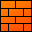
-Animated blocks have a vertical frameset image. Each frame must have same height and your image must have same frame number as the original block
Frameset for 4 frames and animation
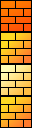
-Sizable blocks have one image divided into 9 pieces which are called "Corners", "Sides" and "Center". Sizable blocks can have any size and also can be resized. The sizable blocks are displayed under most of the BGO's.
Note If you're customizing a block for SMBX, the image should have a size of 96x96 pixels.
Resizable block and its source sprite
Background objects. Are the simple scenery of levels. Sceneries have only two types: Static and Animated. BGO images are similar to Blocks, but have one difference: If you're going to use your episode with SMBX, the images must have the SAME size as the original sprite. The image filesnames of BGO's usually are something like "background-*.ext".
Static picture
Sprite for 4 frames and animated picture
A not about being careful when using BGOs: the BGOs are shared by the Z-position: background-2 Z-level, which is the most lowest Z-level, these BGOs are displayed under sizable blocks. Background-1 Z-level is a displaying over sizable blocks, but under playable character and NPC's and blocks. The foregound level is a displaying over anything, but under blocks and BGO's which the "foreground-2" Z-level. Note related to SMBX: In SMBX the BGOs define their Z-position by array data position. I.e. each BGO has its own sorting priority which defines the BGO's Z-position.
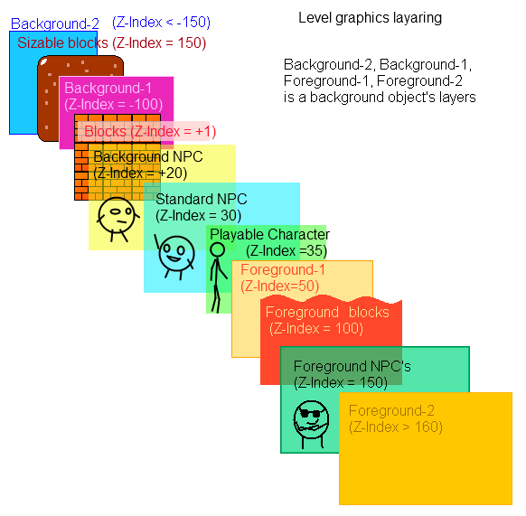
Non-Playable Characters have their own graphic standards. You would have to use custom graphics with the same size and animation frames as the original sprite to replace them. If you want to use custom frame numbers, custom sizes, you can define all those ( graphical settings) in the special config file called NPC.txt (read more). The image filenames of NPC's usually is a "npc-*.ext".
NPCs have multiple graphics types:
- Statical, you can use one image with one frame for an item.
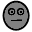
- Animated simple, these have animated frames like blocks or BGO.
- Animated with left-right defined direction. Allows defining images for the NPC's left and right direction.
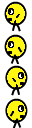 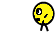
- Animated with left-right-upper directions defining, Allows to define images for left and right NPC's directions and also left
and right directions for upper state.
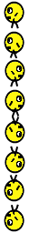 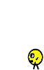
- Animated with rotation. Allows to define NPC's frames with round rotation (NPC should can adhease to celling and walls).
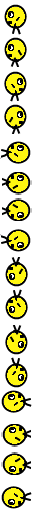 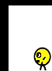
- Animated with the special animation algorithm. The NPC has an algorithmic pre-defined frame sequence, you can't redefine it if you will use your NPC in SMBX.
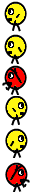
(Read more about NPC customization)
Playable Characters. Is a 10x10 matrix-sprite which have size 1000x1000 pixels and 100 frames totally. Each frame of playable character can have maximum of size is 100x100 pixels. When you customizing playable character, the frames must be calibrated to SAME physics config which have the original frameset of your playable character. Note: SMBX haven't possibles for edit collision (hit) boxes for playable character's frames, and you should use predefined collision boxes positions for draw your sprite of your character.
Backgrounds - Is the images which displaying under all your items on level. The backgrounds usually have image filenames like "background-2-*.ext".
Backgrounds have two types if images: statical and animated like BGO's, but backgrounds have own displaying modes: single-row, double-row and tiled.
-
single-row backgrounds have one row which repeating horisontally, but is
not repeating vertically.
The single-row backgrounds moving vertically
proportionally to section's height.
Image height must be more than 600 pixels (default section height).
Screen only and real demo (horisontal)
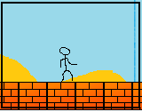 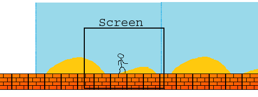
Screen only and real demo (vertical)
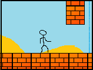 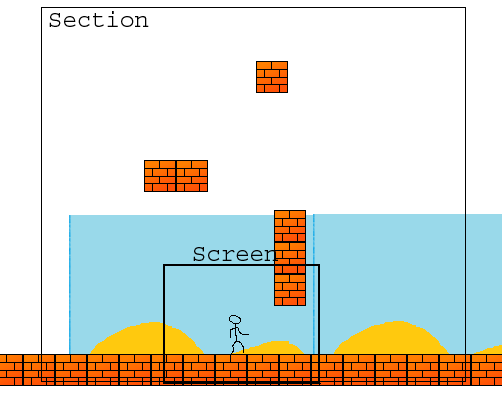
-
double-row backgrounds is a composite background which use two images for
each row.
The double-row background is not moving vertically.
Summary height of both images must be more than 600 pixels (default section
height).
Screen only and real demo
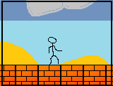 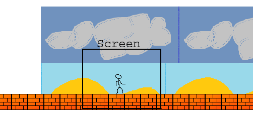
An editor related note: Single-row and Double-row backgrounds will only be displayed at the bottom or top (which attachment type have this background) with only horisontal repeating. If you want to see your background like tiled, you need when you exporting image set the "Tiled background" flag. Also in the INI configs available flag which called as "tiled in the editor" which will make your single-row background like tiled, but in editor only, in game process your background will be displayed in the normal mode.
Be careful, if you replacing the single-row backgounds: they are repeats by horisontal only, and in the editor you will see the attached image. You can use background images with any sizes, but when you customizing the animated background, it's sprite must have the same frames number which have original background. Also, the background image must have height is at least height of screen (in the SMBX is screen height is a 600 pixels).
- tiled background repeats by both directions: horisontally and vertically. Image can have any sizes.
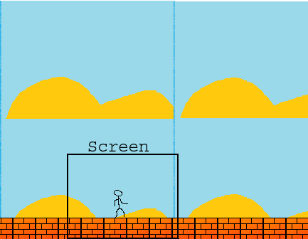
Note: Some backgrounds have the magic effect, which deviding your image into strips which moving with diffirence speeds.
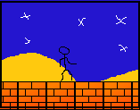 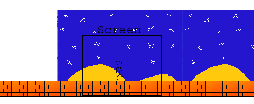
World graphics are usually placed together with the world map file, but you can place all the images in the World Custom Directory (not supported by SMBX).
Tiles, Paths, Sceneries. The graphics are similar to the BGOs in levels. Images have two types: static and animated. Image files usually have names like "tile-*.ext", "path-*.ext" and "scene-*.ext".
Levels. Level images have some minor differences from other images. Mainly images always attaching to bottom-center position of item, where image was used. The image files of levels usually is a "level-*.ext".
- When customizing an animated item, make sure that your sprite has the same number of frames as in the original image.
- Remember that if the size of a custom BGO is larger than the original image you are replacing, it will be cropped in SMBX. In other words, don't use custom images larger than the image you're replacing if you want to use them in levels for SMBX. This also applies to Tiles, Sceneries, Paths and Levels in the World map.
- When customizing a NPC, you'll have to create the image sprite with the same image size and number of frames as the original. If you're creating a custom image size, remember to create the npc-*.txt config file for defining the properties of your custom NPC.
- Remember to be careful with your filenames in UNIX-Like operating systems, an example would be something like "thecat" and "TheCat", both are recognized as entirely different files.
The PGE supports the following graphic formats:
| Format | Description | Notes |
|---|---|---|
| GIF | CompuServe GIF, without transparency (with using the masks) | |
| GIF | CompuServe GIF, with it's own transparency | SMBX will fill the transparency with black |
| BMP | Uncompressed image format (with using of the masks) | |
| PNG | Portable Network graphic, with alpha-channel transparency | Not supported by SMBX |
| JPG | Joint Photographic EG, Lossy-data compressed | Not supported by SMBX |
| TIF | Tagged Image File Format | Not supported by SMBX |
| TGA | Truevision TGA | Not supported by SMBX |
Copyright © 2014 Platformer Game Engine by Wohlstand project. All rights reserved.